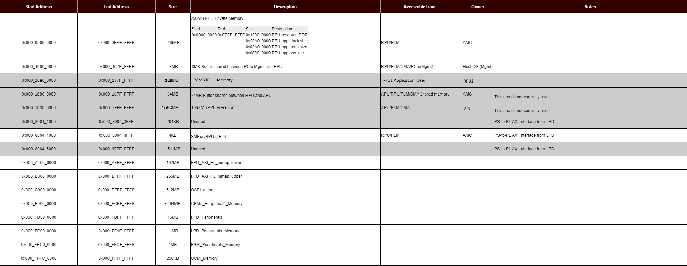
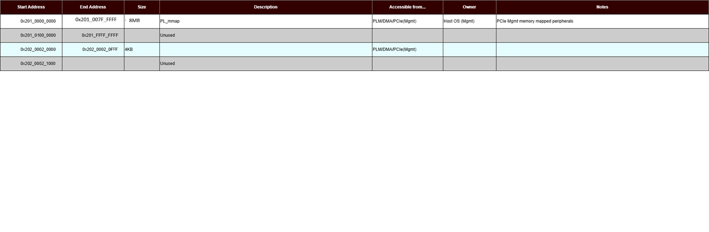
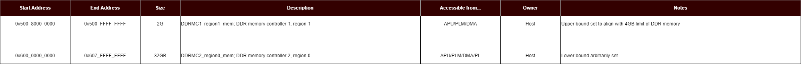

AMR V80 - Memory Map¶
AMR uses the address mapping illustrated below.
Memory Mapping¶
This table shows the recommended functions that can access the DDR Memories. The light grey rows and columns related to the APU, PCIe User, and PCIe DMA are not currently used, but they are captured for future growth. The Yes/No entries indicate the recommended memory access. There is not an active control that prohibits unintended access to the DDR. For example, if caution is not exercised, the APU or PL could access DDR locations intended for the RPU (RPU execution).
Address remapping is configured for PCIe access to the PL memory space through the AXI NoC CIPS (axi_noc_cips):
PF0 Address Remapping:
PCIe BAR0 Address: 0x201_0000_0000
Remaps to AXI Address: 0x1000_0000 (local address space)
Aperture Size: 8 MB
Configured in axi_noc_cips M00_AXI and S00_AXI/S01_AXI REMAPS
PF1 Address Remapping:
PCIe BAR2 Address: 0x202_0000_0000
Remaps to AXI Address: No remap (direct addressing)
Aperture Size: 1 GB
Configured in axi_noc_cips M01_AXI
The address remap configuration is implemented in the AXI NoC CIPS (axi_noc_cips) IP block.

N/A* The RPU is only 32-bit addressing, so it cannot access more than 4GB of DDR.
AMR Memory Map¶
This table shows the memory map of AMR. The greyed out rows are not used in AMR, but they are available for future growth.
A complete AMD Versal™ Address map can be found here:
https://docs.xilinx.com/r/en-US/am011-versal-acap-trm/4-GB-Processor-System-Address-Map
https://docs.xilinx.com/r/en-US/am011-versal-acap-trm/16-TB-Address-Map
AMR 4G Memory Space - DDR Lower 2G & PS/PMC¶
AMR PL Memory Space¶

PL Memory Space - Current Base Design:
PF0 BAR0: 0x201_0000_0000 - 0x201_007F_FFFF (8 MB) - No hardware IP instantiated, address space reserved
PF1 BAR2: 0x202_0000_0000 - 0x202_0FFF_FFFF (256 MB via 1GB aperture) - SmartConnect → AXI GPIO test
Note: PCIe® Management functions shown in diagram may reference hardware that is not instantiated in the base design. The base design provides address space for future expansion but does not include management IP blocks (GCQ, UUID ROM, EEPROM controllers) in PL.
AMR DDR Upper 2G and DIMM 32G Memory Space¶
